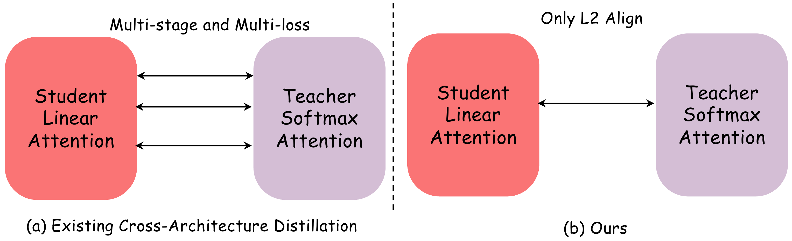
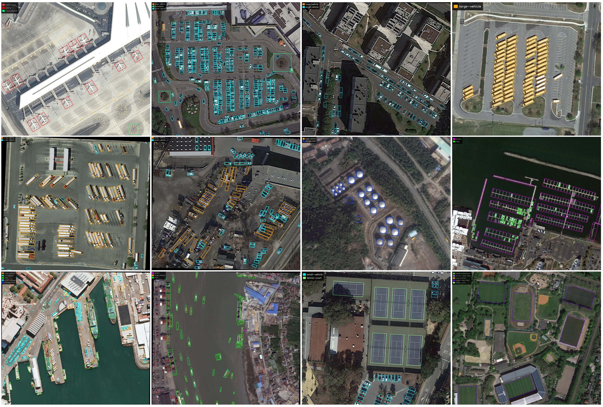
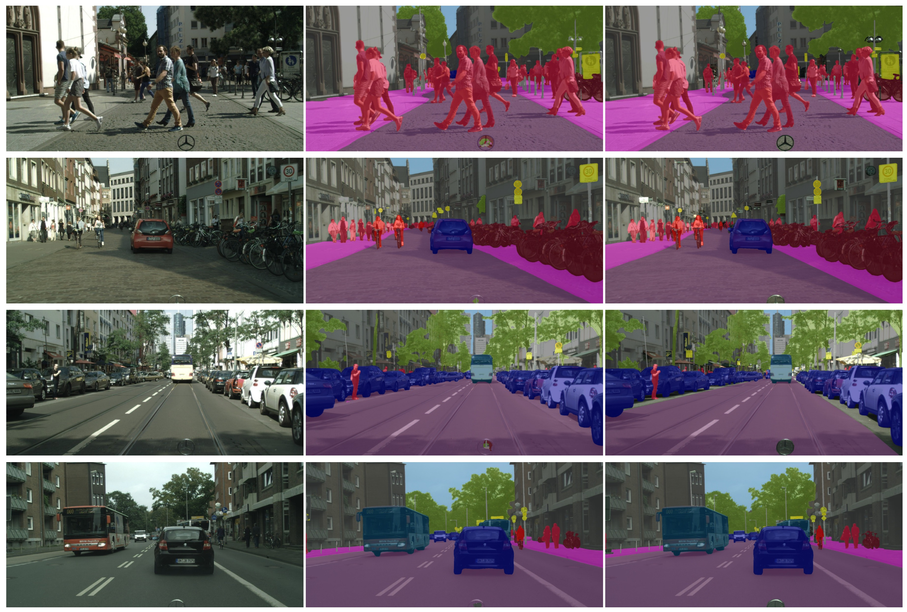
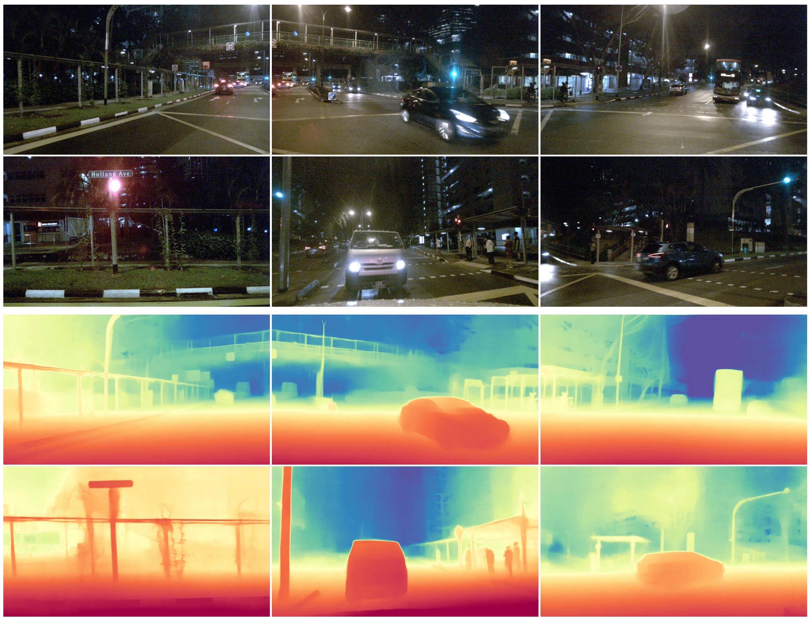
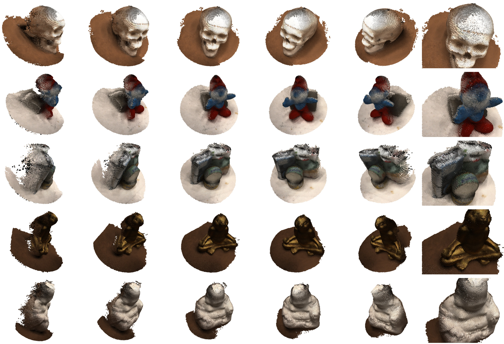
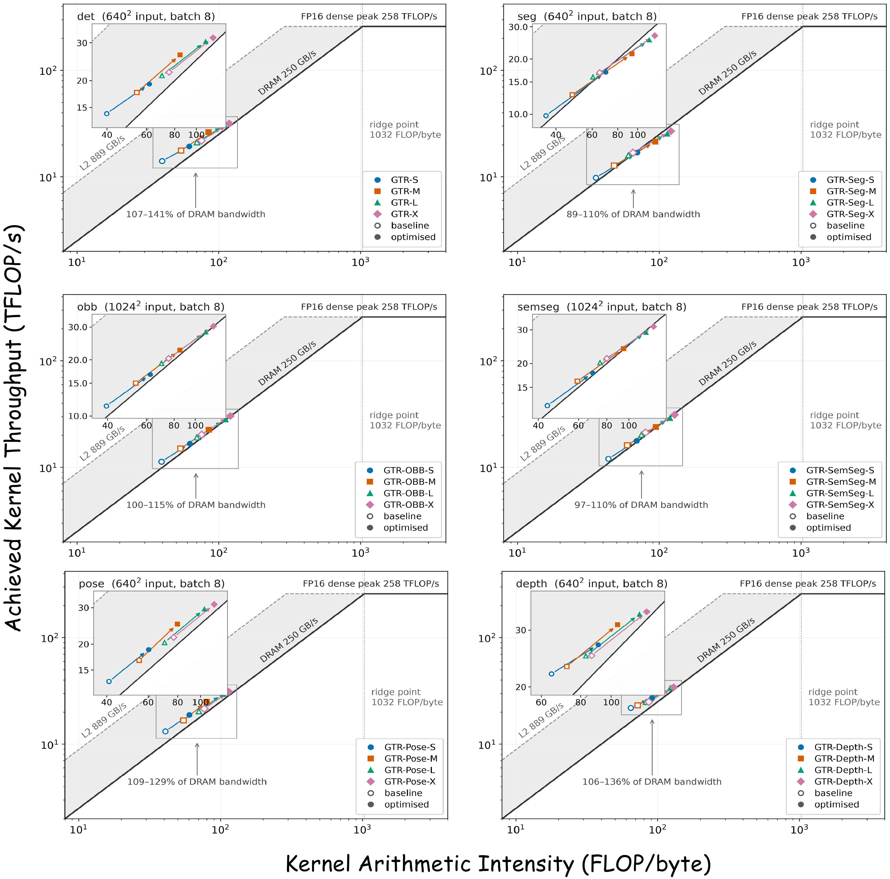

GTR: Gated Token Recurrence for Efficient Dense Prediction
Anonymous Authors · code & models released upon publication
GTR is a softmax-free, single-scale recurrent vision backbone: every global
token-mixing block is gated linear attention, with scan directions alternating
across depth and Spatial SwiGLU for local mixing. It learns from a
detection-specialized DINOv3 teacher through a single squared
ℓ2 loss on final patch tokens — no masking, no intermediate
supervision. With Objects365 pre-training, GTR-L reaches 58.9 box AP on
COCO at a 1.908 ms median forward pass; the same backbone design
serves six dense-prediction tasks and runs below 8.8 ms on
DRIVE AGX Thor.
COCO box AP (GTR-X) — 53.6 / 57.3 / 58.9 / 59.4 across S/M/L/X with Objects365 pre-training
0ms
GTR-L median forward pass at 58.9 AP — RTX 4090, compiled FP16, batch 1
0×
faster than FLA v0.5.0 at the 1,600-token deployment length (6.4× at 16,384)
0tasks
deployed on DRIVE AGX Thor — all 24 task–scale models at 2.28–8.77 ms batch-one medians
TL;DR
Compact self-attention backbones such as DINOv3-distilled
detectors work well for dense prediction, but global softmax attention costs grow quadratically
with the number of image tokens. GTR asks how far a purely recurrent backbone can go:
12 gated-linear-attention (GLA) blocks on a single stride-16 patch grid, one directional scan
per block cycling through four directions across depth, and a depthwise-augmented SwiGLU for
local spatial mixing — no softmax attention in any global token-mixing block. Instead of
multi-stage cross-architecture distillation, a linear projection and one squared
ℓ2 loss align the student's final patch tokens with a frozen
detection-specialized DINOv3 teacher. The resulting backbone design serves
object detection, instance segmentation, pose estimation, oriented
detection, semantic segmentation and monocular depth, with specialized chunkwise CUDA
execution on RTX 4090 and TensorRT deployment on DRIVE AGX Thor.
Accuracy–Latency Frontier
Every latency-measured model below was re-benchmarked under one unified protocol:
median CUDA-event latency of the network forward pass — FP16, batch one, RTX 4090,
torch.compile + CUDA Graphs, CUDA NMS included for models that need it.
Baseline accuracy values follow the sources identified in the paper's full tables.
Hover any point for details, switch task, or filter by model scale — GTR variants
(green squares) trace the upper-left frontier. Exact numbers are in the
results tables.
COCO box AP vs. median latencyval2017 · 640×640 · lower-right is slower, higher is better
Task
Scale
GTR (ours)
DETR-style detectors
YOLO / CNN family
How GTR Works
GTR keeps the same stride-16 patch grid through all 12 blocks — no hierarchy, no
window partitioning. Each block combines key-only gated linear attention along one
scan order with a Spatial SwiGLU channel mixer; consecutive blocks cycle through
left→right, right→left, top→bottom and bottom→top orders, so context accumulates from
complementary directions across depth. Features tapped at blocks 4/8/12 feed a lightweight
stride-8/16/32 pyramid and a DETR-style decoder with 300 queries. Four scales — S/M/L/X at
12.1/22.7/37.2/46.5 M detector parameters — share this exact layout.
Key-only gated recurrence
Directional scanning
LR → RL → TB → BT, one scan per block
Spatial SwiGLU
in SwiGLU
A Single ℓ2 Loss for Cross-Architecture Distillation
The teacher is a DINOv3 backbone specialized for detection following the EdgeCrafter recipe,
then frozen. Teacher and student both process the same complete image, so their
patch tokens correspond spatially. A learned linear projection aligns feature
dimensions, and the entire distillation objective is
There is no input masking, no intermediate-layer loss, and no token-affinity target —
only the student and the projection are optimized. Prior cross-architecture transfer
pipelines bridge different token mixers with several stages or complementary objectives;
with the same teacher, student and downstream COCO schedule, the single final-output loss
outperforms our adaptations of both:
Backbone initialization (GTR-S, direct COCO, no Objects365)box APΔ
Random initialization (from scratch)31.1—
ViT-AdaLA (adapted) — two stages: per-module matching, then final alignment48.2+17.1
ViT-Linearizer (adapted) — masked prediction + affinity matching, best mask ratio 0.550.0+18.9
Final-output ℓ2 only (GTR)50.7+19.6

A Kernel That Makes Recurrence Fast
Chunkwise GLA evaluates the exact recurrence through matrix contractions over chunks of
tokens. The reference schedule propagates state while traversing chunks
serially; GTR's inference-only operator instead computes all per-chunk summaries in
parallel across the chunk–head grid and leaves only a lightweight, coalesced scan for the
boundary states. The output kernel fuses the within-chunk score–value product with the
boundary-state readout and holds the causal tile in shared memory. Execution is specialized
to the deployment regime — FP16, , , zero initial state — while training
keeps the reference FLA kernels. Same state update, different execution schedule.
2.6× faster than FLA v0.5.0 at L = 2564.0× faster at L = 1,600 — the 640² deployment grid6.4× faster at L = 16,384 — high-resolution regimesame GLA recurrence — a new schedule, not sparsification
Results
One Backbone Design, Six Dense Tasks
Separate models with task-specific heads share the same distilled GTR backbone design.
Detection: 53.6 / 57.3 / 58.9 / 59.4 AP at S/M/L/X — GTR-L gains +1.8 AP over
D-FINE-L while running 1.29× faster; GTR-X is the fastest X-scale entry at 2.115 ms.
Instance segmentation: first in mask AP in all four scale groups, without SAM2
pseudo-mask pre-training. Pose: first in keypoint AP in all four groups, beating
ECPose by 0.7–1.7 AP at lower latency. Oriented detection: 81.3 AP50 on
DOTA-v1.0 at 3.960 ms — the best accuracy and latency among latency-measured
DETR-based models (the others need 9.3–15.5 ms). Semantic segmentation: higher
Cityscapes mIoU than size-matched YOLO26-sem at S/M/L, and 83.6 mIoU at lower latency at X.
Depth: better NYU δ1, AbsRel and RMSE than the evaluated YOLO26-depth
variants at every scale, without NYU-specific fine-tuning. Each tab pairs the full
comparison table with qualitative results; the best value per column within each group
carries a green dot, GTR rows are highlighted.




Accuracy Scales with Input Resolution
Linear complexity is only useful if the extra spatial detail is actually exploited. Sweeping
the Objects365-pre-trained GTR-S from 640² to 1280², accuracy improves monotonically from
53.6 to 57.0 AP, with the largest gain on small objects (APS 36.4 → 42.4) —
while median latency grows only from 1.225 to 2.529 ms and peak memory from 0.096 to
0.249 GB. That is 2.06× latency for 4× as many image tokens under the reported
benchmark: GTR does not merely tolerate larger inputs; it converts them into accuracy.
What Actually Matters
Local Mixing Beats Positional Embeddings
Spatial SwiGLU replaces learned positional embeddings entirely — and wins: on GTR-S it adds
+1.2 / +1.3 AP at 768² / 1024² for only 0.2 / 0.5 extra GFLOPs. The interaction with
scanning is where it gets dramatic: with a single scan direction, swapping S-SwiGLU for
positional embeddings collapses GTR-L from 54.4 to 45.6 AP (−8.8) — local spatial mixing is
what makes causal scans workable on images.
Single direction + learned positional embedding45.6−9.9
Softmax Layers Don't Pay Their Way
Would sprinkling softmax attention back in help? Replacing three of GTR-L's twelve GLA
layers with softmax attention — first three, last three, or uniformly spaced — yields
55.4–55.6 AP versus 55.5 for pure GLA, while median latency rises from 1.908 to
2.094–2.117 ms. At this scale the hybrids buy no reliable accuracy and cost ~10%
latency; run-to-run variation is not reported, so the 0.1-AP differences should not be
over-read. Independently, Objects365 detector pre-training adds +2.9 / +3.3 / +3.4 /
+3.2 AP at S/M/L/X — the headline numbers reflect both the distilled representation and
supervised pre-training.
Pure GLA — 55.5 AP · 1.908 msHybrid (last 3 softmax) — 55.6 AP · 2.117 msHybrid (uniform 3) — 55.6 AP · 2.109 msHybrid (first 3) — 55.4 AP · 2.094 ms
Edge Deployment on DRIVE AGX Thor
GTR deploys in TensorRT on NVIDIA DRIVE AGX Thor with graph transformations and fused CUDA
kernels for GLA and S-SwiGLU, built for Thor's sm_110 GPU. Across all six tasks
and four scales, batch-one median latency spans 2.282–8.769 ms — detection runs
at 2.282–4.080 ms — and FP16 TensorRT outputs keep a cosine similarity of at least
0.9989 with their FP32 PyTorch references across all 48 task–scale–batch configurations.
Task
Input
GTR-S
GTR-M
GTR-L
GTR-X
Detection
640²
2.282
2.721
3.527
4.080
Instance segmentation
640²
3.474
4.363
5.130
5.703
Pose estimation
640²
2.459
3.082
3.909
4.455
Oriented detection
1024²
4.310
5.491
7.602
8.769
Semantic segmentation
1024²
3.579
4.655
6.792
7.916
Monocular depth
640²
2.675
3.071
3.872
4.389

Our Mission
Our mission is to build powerful, efficient AI models and make them
effortless to deploy. 🚀🚀🚀
Citation
If you find GTR useful, please consider citing:
@article{gtr2026,
title = {{GTR}: Gated Token Recurrence for Efficient Dense Prediction},
author = {Anonymous},
note = {Under double-blind review},
year = {2026}
}